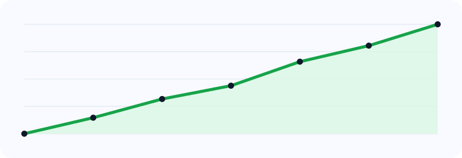

Gait quality analysis
Convert walking cycles into interpretable summaries for cadence, symmetry, stability and overall gait quality.
A premium gait analytics product page for rehabilitation, mobility assessment, elderly care monitoring and fall-risk screening.
The product translates walking patterns into interpretable signals for clinicians, therapists and care teams who need understandable gait intelligence with clinically meaningful outputs.
Interpret gait, stability and progression.
The page is framed for rehabilitation centres, elder-care programs and mobility assessment use cases rather than general AI positioning.
Convert walking cycles into interpretable summaries for cadence, symmetry, stability and overall gait quality.
Highlight elevated-risk cases using motion irregularity, instability cues and trend-based deterioration indicators.
Compare time-separated sessions to understand whether rehabilitation is improving mobility outcomes.

This view presents a frame that better reflects how gait information can be visualised for clinicians, researchers and product buyers.
A more polished, enterprise-grade dashboard view with gait capture video, metrics and a review queue for medical / gait-fall analytics.

Elevated fall-risk due to asymmetry and reduced stability
Cadence remains low though rehab trajectory is improving
Stable gait profile over the last three monitored sessions
Review recommended for stride variability and recovery pacing
The page now reads like a focused product offer for clinical mobility and fall-risk applications.
Track patient progress over time using interpretable gait and mobility indicators across multiple review sessions.
Prioritise individuals who show gait instability, asymmetry or decline indicative of higher fall risk.
Provide structured walking summaries to support assessments, interventions and longitudinal comparison.
Use captured video and analytics summaries to support follow-up outside the clinic when needed.